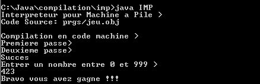

Référence :
Compilateurs, principes, techniques et outils (A.V. Aho, R. Sethi et J.D. Ullman - InterEditions).
Interprésteur pour Machine à Pile (IMP) :
Traduit puis execute pas à pas les instructions du fichier objet (.obj) en code binaire x86.
La grammaire de l'interpreteur IMP (au format GBF) :
{ Grammaire de l'interpreteur IMP }
{
%0 : Initialisation
1Šre Passe
%1 : ID --> Tab_ID
%2 : Inc(CO)
2Šme Passe
%2 : Inc(CO)
%3 : Memoire[CO].Type_Code:=_Instr;
Memoire[CO].Instr:=CHAINE;
%4 : Memoire[CO].Type_Code:=_Donnee;
: Memoire[CO].Type_Donnee:=_Adr;
%5 : Memoire[CO].Type_Code:=_Donnee;
: Memoire[CO].Type_Donnee:=_Chaine;
%6 : Memoire[CO].Type_Code:=_Donnee;
: Memoire[CO].Type_Donnee:=_Valeur;
%7 : Memoire[CO].Valeur:=Tab_Id[Code_Id(CHAINE)].Adr;
%8 : Memoire[CO].Chaine:=CHAINE;
%9 : Memoire[CO].Valeur:=VALEUR;
}
Production = 'Vide' ;
Prog = Ligne_Code Prog
| 'Vide' ;
Ligne_Code = Label Suite_Label
| Instr %3 %2 ;
Label = 'ID' %1 ':' ;
Suite_Label = Instr %3 %2
| 'TYPE_INTEGER' %6 %2
| 'TYPE_STRING' %5 %2
| 'Vide' ;
Instr = 'PUSH' Options
| 'POP' 'ID' %4 %7 %2
| 'ADD'
| 'SUB'
| 'DIV'
| 'MUL'
| 'INF'
| 'SUP'
| 'EQU'
| 'OR'
| 'AND'
| 'NOT'
| 'NEG'
| 'INC'
| 'DEC'
| 'CALL' 'ID' %4 %7 %2
| 'RET'
| 'JMP' 'ID' %4 %7 %2
| 'JC' 'ID' %4 %7 %2
| 'JNC' 'ID' %4 %7 %2
| 'WRITE' 'ID' %4 %7 %2
| 'READ' 'ID' %4 %7 %2
| 'NOP'
| 'END' ;
Options = 'ID' %4 %7 %2 | 'CH' %5 %8 %2 | 'NB' %6 %9 %2 ;
Exemple du programme de calcul de la factorielle n (fichier fact.obj) :
{------ Instructions -------}
JMP MAIN
FACT:
POP FACT.N
if1:
PUSH FACT.N
PUSH 1
EQU
JNC else1
then1:
PUSH 1
JMP endif1
else1:
PUSH FACT.N
PUSH FACT.N
DEC
CALL FACT
MUL
endif1:
RET
MAIN:
PUSH 'Valeur n:'
POP MAIN.CHAINE
WRITE MAIN.CHAINE
READ MAIN.N
PUSH MAIN.N
CALL FACT
POP MAIN.RES
WRITE MAIN.RES
END
{--------- Donn‚es ---------}
{ Fonction> MAIN: Type_VOID }
MAIN.RES: Type_INTEGER
MAIN.N: Type_INTEGER
MAIN.CHAINE: Type_STRING
{ Fonction> FACT: Type_INTEGER }
FACT.N: Type_INTEGER
FACT.RES: Type_INTEGER
Exemple du jeu "trouver un nombre secret compris entre 0 et 999 en un minimum d'essai" (fichier jeu.obj) :
{------ Instructions -------}
JMP MAIN
MAIN:
PUSH 423
POP MAIN.X
while1:
PUSH MAIN.NB
PUSH MAIN.X
EQU
NOT
JNC endwhile1
PUSH 'Entrer un nombre entre 0 et 999 >'
POP MAIN.CHAINE
WRITE MAIN.CHAINE
READ MAIN.NB
if1:
PUSH MAIN.NB
PUSH MAIN.X
EQU
JNC else1
then1:
PUSH 'Bravo vous avez gagne !!!'
POP MAIN.CHAINE
WRITE MAIN.CHAINE
JMP endif1
else1:
if2:
PUSH MAIN.NB
PUSH MAIN.X
INF
JNC else2
then2:
PUSH 'Plus haut...'
POP MAIN.CHAINE
WRITE MAIN.CHAINE
JMP endif2
else2:
PUSH 'Plus bas...'
POP MAIN.CHAINE
WRITE MAIN.CHAINE
endif2:
endif1:
JMP while1
endwhile1:
END
{--------- Donnees ---------}
{ Fonction> MAIN: Type_VOID }
MAIN.NB: Type_INTEGER
MAIN.X: Type_INTEGER
MAIN.CHAINE: Type_STRING
Exemple du programme de calcul du maximum entre deux nombres (fichier max.obj) :
{------ Instructions -------}
JMP MAIN
MAXIMUM:
POP MAXIMUM.J
POP MAXIMUM.I
if1:
PUSH MAXIMUM.I
PUSH MAXIMUM.J
INF
JNC else1
then1:
PUSH MAXIMUM.J
JMP endif1
else1:
PUSH MAXIMUM.I
endif1:
RET
MAIN:
PUSH 'Valeur i:'
POP MAIN.CHAINE
WRITE MAIN.CHAINE
READ MAIN.I
PUSH 'Valeur j:'
POP MAIN.CHAINE
WRITE MAIN.CHAINE
READ MAIN.J
PUSH 'Maximum >'
POP MAIN.CHAINE
WRITE MAIN.CHAINE
PUSH MAIN.I
PUSH MAIN.J
CALL MAXIMUM
POP MAIN.MAX
WRITE MAIN.MAX
END
{--------- Donn‚es ---------}
{ Fonction> MAIN: Type_VOID }
MAIN.I: Type_INTEGER
MAIN.J: Type_INTEGER
MAIN.MAX: Type_INTEGER
MAIN.CHAINE: Type_STRING
{ Fonction> MAXIMUM: Type_INTEGER }
MAXIMUM.I: Type_INTEGER
MAXIMUM.J: Type_INTEGER

Sources et code de l'Interpréteur pour Machine à Pile (IMP) : imp.zip.